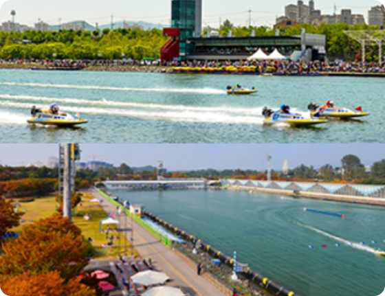
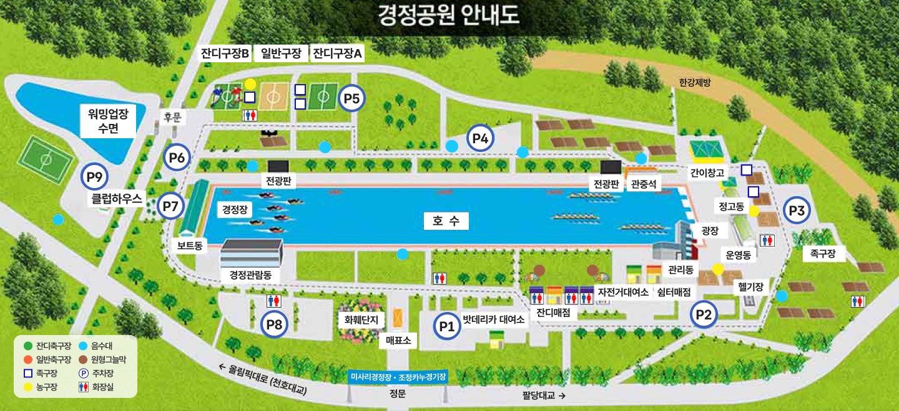

<!-- Header -->
<%- include('../_ejs/top.ejs', {
    title: "KBOAT 경정",
    url: "../../"
}) %>

<!-- 레이아웃 -->
<div class="lytLayout">
    <div class="layoutArea">

        <!-- 상단영역 -->
        <div class="layoutTop">
            <!-- Top -->
            <%- include('../_ejs/header.ejs', {
                url: "../../"
            }) %>
        </div>
        <!-- //상단영역 -->

        <!-- 중단영역 -->
        <div class="layoutContainer" id="container">

            <!-- 서브 콘텐츠 영역 -->
            <div class="layoutSubCont">

                <!-- 서브 컨텐츠 내용이 들어오는 영역-->
                <!-- 서브 탑 (타이틀) -->
                <%- include('../_ejs/sub_top.ejs', {
                    location: ['총괄본부','미사경정공원'],
                    subTitle: '경정공원 소개',
                    subText: '<b>국민체육진흥공단 경륜경정총괄본부</b>가<br>건강한 세상을 앞당기고 있습니다.',
                    url: "../../",
                    visualClass: "bg06",
                }) %>

                <div class="layoutContArea">
                    
                    <div class="cptContSpeedom">
                        <div class="contArea">
                            <div class="list">
                                <div class="img"></div>
                                <div class="cont">
                                    <div class="comTitH2">
                                        <h2>미사경정공원</h2>
                                        <p class="rightTxt">Motorboat Racing Park</p>
                                    </div>
                                    <div class="comBasicTxt">
                                        <p class="txt">
                                            공원을 편리하게 이용하실 수 있도록 안내해 드립니다. <br />
                                            미사경정공원은 86 아시안게임 및 88 서울 올림픽 당시 조정, 카누경기를 위해 만들어진 공원으로 조정호수를 중심으로 축구장, 족구장 등의 스포츠시설, 그늘막, 매점 등 편의시설과 자전거대여 놀이시설을 갖추어 시민들의 여가선용 장소로 사랑받고 있습니다.
                                        </p>
                                    </div>
                                    <div class="infoTxt">
                                        <div class="tit">목표</div>
                                        <dl>
                                            <dt>위치</dt>
                                            <dd>경기도 하남시 미사대로 505 미사경정공원</dd>
                                        </dl>
                                        <dl>
                                            <dt>대지면적</dt>
                                            <dd>1,329,933㎡ <br />(주경기장 1,128,592㎡ / 워밍업장 201,341㎡ 녹지포함)</dd>
                                        </dl>
                                        <dl>
                                            <dt>호수크기</dt>
                                            <dd>길이 2,212m, 폭 140m, 평균수심 3m</dd>
                                        </dl>
                                        <dl>
                                            <dt>도보, 자전거 출입</dt>
                                            <dd>05:00 ~ 20:00</dd>
                                        </dl>
                                        <dl>
                                            <dt>차량출입</dt>
                                            <dd>06:00 ~ 20:00</dd>
                                        </dl>
                                    </div>
                                </div>
                            </div>
                            <div class="list bt">
                                <div class="cont">
                                    <div class="comTitH2 mRow">
                                        <h2>경정공원 안내도</h2>
                                    </div>
                                    <div class="parkImg">
                                        
                                    </div>
                                </div> 
                            </div>
                        </div>
                    </div>
                    
                </div>

                <!-- //서브 컨텐츠 내용이 들어오는 영역-->

                <!-- 서브 바텀 (담당자) -->
                <%- include('../_ejs/sub_btm.ejs', {
                    team: '경륜서비스팀',
                    name: '신동헌',
                    phone: '02-2067-5822',
                    url: "../../",
                }) %>
                <!-- //서브 컨텐츠 내용이 들어오는 영역-->
                
            </div>
            <!-- //서브 콘텐츠 영역 -->

        </div>
        <!-- //중단영역 -->

        <!-- 하단영역 -->
        <div class="layoutFooter">
            <!-- Footer -->
            <%- include('../_ejs/footer.ejs', {
                url: "../../"
            }) %>
        </div>
        <!-- //하단영역 -->

    </div>
</div>


<!-- Bottom -->
<%- include('../_ejs/bottom.ejs', { }) %>